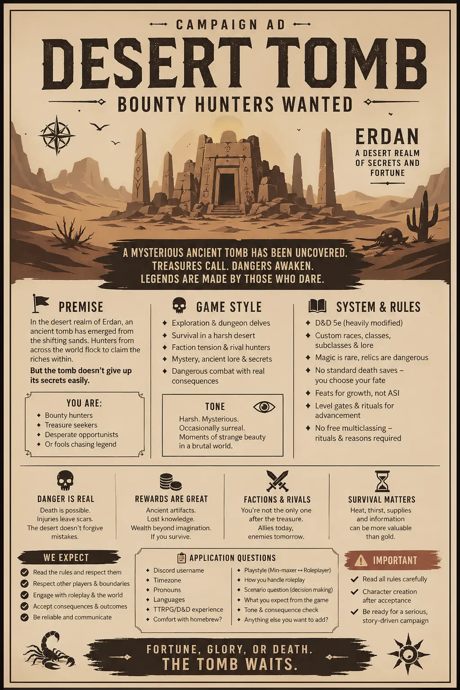

Desert Tomb Campaign: Looking for Players
In this article I'm advertising a campaign that I intend on starting don’t worry about a date when it is published, even if it is far from when you apply. If the link to the form is still up, that means the recruitment is still ongoing, as I’m quite picky when it comes to players I GM for. This campaign will probably start in late June, as I need time for work and personal stuff, but I want to get it out there to get the best people, so expect a response by the middle/end of May.
I expect each player to provide me something I call a “chasing wolf” – a thing or things that follow player’s character from their backstory into the story and force them to either confront it or move forward, escape. It can be a deal gone bad or a family curse a player wants to break – nobody in Erdan is innocent and no moral doesn’t have a cost.
Pitch
Your old life is no more, something has happened, that made you hit the road and become an adventurer. In your home region you didn’t have much success, barely getting by… but one day you were approached by a hooded man, who introduced himself as Lyrenar – an adventurer who was assembling a party to venture into the sands of Erdan in search of a rumored, recently unearthed tomb, which holds great riches.
He said that he will act as your guide and coordinator, but due to the injury he has sustained he will not be able to aid you in battle. After hesitating you verified his his claims, and so you’ve decided to join him and other likewise people on the adventure.
Many hunters will compete with you for the elusive prize – fools chasing legends in the deserts where everything has a price. Alliances will be built and break in the blink of an eye – many will fall and few will you prevail. How will your story end?

About me
My name is Exi and I’m the owner of this here website. I’ve been GMing for over 10 years and I strive to give players freedom in a guided setting. My games are harsh and require a specific attitude, but not experience, so feel free to apply no matter your level.
When you are making decisions, that your characters know are dangerous you will receive one and only one clear warning, if you proceed to ignore it the consequences are on you. I don’t like killing PCs, but if that happens, it happens.
I have a zero tolerance policy for violating other players boundaries and a two strike system for other problems. If you're allowed to play in my games means, that I trust you and remember "Trust is given, mistrust is earned".
Rules
This section will detail the ruleset we'll be using during this game. The core system (apparently) is DnD 5e 2014, but with so many changes grafted by me and my acquaintances, that it may be a whole new game. Due to that, in this section I'll detail exact rules that will come into play with this campaign and if you don't like any of these does not suit your taste, that this game is not for you, as I like the way I run my games and don't thing about drastically changing it any time soon.
This is gonna be a long one, but If you wanna play in my games you gotta get used to this, and seriously read through it as this is some really important info.
DnD 5.19. This is a soft remake of DnD 5e 2014, that has been cooked by people of NAT19 with their many supplementary books. This is the core of our experience, but only for mechanics, as the setting and lore is home made with love. There are many new classes, subclasses and races (using races from here is non negotiable, as the races are completely changed from their default DnD 5e counterparts).
Expect to see some futuristic and even silly stuff here, as even in the grimmest of places there space for little whimsy.
Setting. The game takes place a belle époque inspired period after the great many years of instability and suffering. The civilization of ages past have been destroyed and due to the instability they have been lying, waiting there.
Gods have mostly forsaken the land, due to unknown reason and priests struggle to even maintain the current connection. Magic is scarce, and artifacts and mystical items shape the environment around them. Many organizations hunt for these magics, and will stop at nothing to get them.
Land of Sain is a miserable place, but a place of hope, where people bundle together, to face unimaginable forces that have haunted them for ages upon ages. Many will die along the way, but those who push through will find their deliverance.
Mortal Limits – levels and multiclassing. Fully mortal creatures may encounter roadblocks at their paths of advancement. Some seek divine grace to help them while other conduct wicked rituals trying to augment their vessel for the power that is growing within them.
Speaking mechanically - your character may advance only to level 8 without any roadblocks, but after that your character is to weak and needs help, which mostly will be in a form of ritual, that will allow them to gain another 2 levels.
This also prevents multiclassing, as the energies within the character would clash, causing them to lose their minds. But... With use of certain rituals it is possible to exchange levels in a specific class to a different one, as long as one is dedicated enough and is willing to pay an appropriate price.
Powerscaling – ability scores and advancement. Adventurers often start meek, afraid of but a single kobold, but they grow to be powerhouses to rival demigods. That's why at my table we use a different method for assigning and advancing ability scores:
- At the beginning, everyone rolls for stats, rolling 3d6 for each of their abilities, at the same time, until the total is equal to or higher than 60. Macro for stat rolling is provided during character generation.
- During level ups players cannot take ASI and must pick a feat in its place.
- Players gain +1 that they may add to any of their stats, with normal restrictions, upon achieving a goal, a feat or something noteworthy in any other way, per GM discretion of course.
Putting Legendary back in Legendary creatures. Normal DnD Legendary resistances and actions are boring and static, which was changed by us. The new so called Legendary break points start at a certain level depending on a creature and they regain some amount of them at the start of every round.
They can be used in many more ways than their regular counterparts, as they can also function as dispell magic, counterspell or a condition break, but they are also used for legendary actions and a Break Ability, that they can only use when at the maximum of Legendary break points.
They give players more dynamic - do I wait with my big thing for them to burn through the Legendary break point, but risk not being able to use it, or do I use it now and force the enemy to expend their defenses opening opportunity for my allies.
Besides that the normal initiative of legendary creatures was replaced with a static one and two windows where they can use their legendary abilities to better telegraph the danger to the players from the start.
Spellbook Machinations. Some spells belong to a certain spell group, that limits their availability, thus your character requires a reason to know it, plain and simple.
Some spells may also corrupt you when used (change in alignment or even being abandoned by one's god).
Dynamic Attunement. This rule is a part of making the artifacts feel tremendous. You have an amount of attunement slots equal to your proficiency bonus and different tiers of magic items take up different amount of them: uncommon 1, rare and very rare 2, etc.
BUT the things that are a part of a magic set, or that choose you as their wielder do not count towards this limit, allowing for better relation building with one's equipment.
Daggerheart inspired death rules I became quite fond of these rules as I've experienced the above mentioned system. I've decided to port them to DnD 5e:
When a PC Is reduced to 0 Hit Points, they must make a death move, by choosing one of the following options:
- Blaze of Glory: Your character embraces death and goes out in a blaze of glory. Take one final action. It automatically critically succeeds (with GM approval), and then you cross thru the veil of death.
- Avoid Death: Your character avoids death and faces consequences. They temporarily drop unconscious, and then work with your GM to describe how the situation worsens. While unconscious, your character can’t move or act, and they cant be targeted by an attack. They return to consciousness, when an ally brings them back above 0 hit points or when the party finishes a Short or Long Rest. After the character falls unconscious, roll a d20, If its value is equal or less than your character’s level, they gain a scar: you gain a penalty and you and a GM work to determine the lasting impact on how and if it can be restored. If you ever accumulate 6 scars your character dies. Spells that resurrects remove a certain amount of scars, that will be noted on the later date.
- Risk it All: Roll a d20, If it is 1-10 your character dies, from 11-19 your character stays in combat and regains your character level + your proficiency Hit Points and on a roll of 20 you regain half your Hit Points and a single use of your classes’ signature ability.
Applying
Now after you have hopefully read through all of my advertisement for the campaign, do not make a character yer, as we will be only using options form DnD 5.19, whoch will be available in the VTT of choice – FoundryVTT. If you are interested please fill the form here: https://forms.gle/7q2fxzykGAAcKFmw9